任正非只有一个
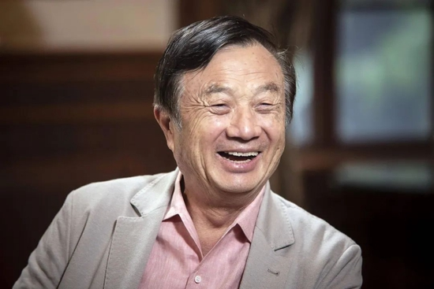
作者/尧七
编辑/煎尼
任正非，注定是中国商业史上无法绕开的名字。
他在新中国成立以前出生，在计划经济时代成长起来，上过大学、进过军队、深入国企，又在人至中年时被迫离职下岗，和朋友拼凑起21000元，以生存为目的建立起一家名叫“华为”的民营企业，从此卷入市场经济大潮。
而这家最初微不足道的小公司，历经35年的打磨与淘洗，如今已经连续六年位列中国民企500强榜首，并且凭借174.6亿欧元的年度研发投入成本，超越微软、三星与苹果公司，成为全球范围内研发投入排名第二位的企业。
华为的成长和它的创始人任正非密不可分，但想要准确地描述任正非其人，却极其困难。35年来，他极少接受媒体采访，沉默得就像隐匿在巨兽身后的一片影子。
但越是神秘，越是引发人的好奇。
究竟是一位怎样的掌舵人，才能让一家名不见经传的企业成长为通信巨头？为什么他能在人人争先恐后玩资本游戏的时候，还毫不犹豫地选择带领华为进行科研攻坚？为什么说任正非不仅仅是一位企业家，而且是一位商业思想家？
这是一门属于任正非的哲学。身处这瞬息万变的世界，关于“为什么任正非只有一个”的这个问题，他说，“唯有惶者才能生存”。
1944年，任正非出生于贵州安顺的一个教师家庭，他是家中长子。他的父亲任木生在解放前夕辗转各地担任中学教师。他的母亲程远昭有高中学历，通过努力自学，成为了一名数学老师。
任正非成长的少年与青年时期，整个中国社会都尚且处于贫穷与动荡之中。
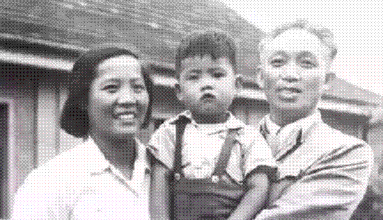任正非和父母
任家兄妹共有七人，在他们成长的早期，每人每学期两三元的学费，已经压得这个家庭喘不过气来。
在这个家里，一条被子要供两三人盖，而被单下面铺的是稻草。在任正非的记忆中，他直到高中毕业都没有穿过衬衣。天气很热的时候，有同学看到他穿着厚厚的外衣，让他向妈妈要件衬衣来穿，但任正非并没有提出这样的请求，因为他知道做不到。
“我上大学时妈妈一次送我两件衬衣，我真想哭，因为，我有了，弟妹们就会更难了。”
但时代的贫瘠与多兄妹的家庭环境交织起来，也在无意中锻造了任正非关怀他人处境、不自私自利的性格特征。
那时候，为了让每个孩子都能活下来，不至于饿死，任家每一餐饭都实行严格的分餐制，控制所有人欲望的配给。
但任正非念书到高三时，正值长身体时期，经常饿得头昏眼花，他们家里装粮食的瓦缸并没上锁，任正非却从来不敢去抓一把来吃，他想，他若是吃了，也许就有一两个弟妹活不到今天。
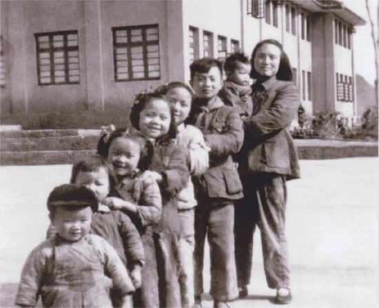任母和任家七兄妹
但在当时，在这个乡村教师的家庭里，为任正非的人格奠定基础的，并不只有艰苦的物质条件，还有难能可贵的教育。
他的父亲任木生是那个年代少见的大学生。“九一八”事变后，任木生参加了北平抗日救亡宣传活动，加入了共青团。在日本发动侵华战争后，任木生还在国民党开办的412军工厂里组织过读书会，联络起那些爱国青年，一起探讨抗日问题。
母亲程远昭虽然生在偏远小镇，但她的父母却能够破除“女子无才便是德”的封建观念，将她送去上学并一直读完高中。此后受到任木生的影响，又努力自学，最终成为了一名支援乡村教育的数学老师。
因此，在这样的家庭里，虽然生活艰苦，但任正非自小便浸润在知书达理的文化氛围中。
为了引导他在贫穷的环境中还能用心念书，程远昭早就用“囊萤映雪”的故事去激励过他。在那些古老的典故中，穷人家的孩子用不起油灯，就算是用绢布袋捕萤火虫或是借用雪地里的月光，也是可以连夜苦读的。
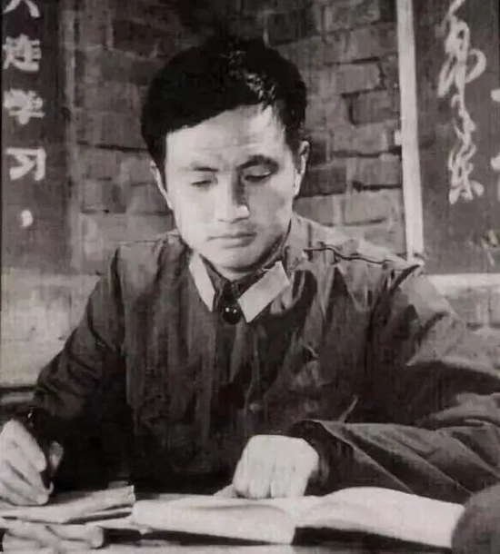青年时期的任正非
任正非考上大学后不久，中国进入了“文化大革命”时期，人们将他的父亲任木生说成是“反动学术权威”，并将其关入牛棚。
得知这个消息后，任正非连夜扒火车到贵阳，回家探望父母亲。但父母害怕影响任正非的前途，第二天清晨就催促他返回校园。在临走时，任木生脱下自己的一双旧翻毛皮鞋给任正非，并且给予了他最重要的告诫。
任木生说：“孩子，记住，知识就是力量，别人不学，你要学，不要随大流。”
因此，回到校园后，任正非开始自学电子计算机、数字技术、自动控制等专业书，把樊映川的《高等数学习题集》从头到尾做了两遍，读了很多逻辑学、哲学方面的书，并且还先后自学了三门外语。
可以说，艰苦的物质生活和心灵的磨难锻造了任正非无私、坚强的性格，而知识的力量，则改变了他的一生。
1968年，任正非大学毕业，被分配到成立于1966年的基建工程兵队伍里，成为一名军人，负责技术工作。他先后参与了辽阳化纤总厂和贵州“011”军事工业基地建设任务。在此后14年的军旅生涯里，他从技术员做到了工程师，最后成为副团级干部。
但彼时中国社会正在经历剧烈变革，任正非的命运不全由他定。
1979年，邓小平提出办经济特区，“中央没钱，你们自己去搞，‘杀出’一条血路来”，他的目光投向广东南部沿海那个名叫“宝安”的边陲小镇，从此这个世界上就将多出一个国际化的大城市，那就是深圳。
上世纪80年代，深圳罗湖
从此，和平与发展的钟声敲响。进入1980年代，国内大规模裁撤军队的进程开启，诸如基建工程兵这样的队伍也概莫能外，技术骨干任正非人至中年，却还是被时代的大浪卷起来，一把抛向了深圳，抛向了市场经济改革的前沿。
1983年，基建工程兵建制撤销，任正非南下深圳。
他起初是进入中国南海石油后勤服务基地工作，成为一名中层干部。四年后，他在南油集团下属的一家电子公司任副总经理。
但好景不长，在进行一笔数目达200万的交易时，他被买方骗去了货物，没能收到货款。因此，任正非被解除职务，丢掉了工作。
中年失意，但还有家庭的重任等待他去担负。1987年，在走投无路的情况下，任正非游说了几个朋友入伙，东拼西凑起21000元钱，以生存为目的，建立了华为。
那时候的任正非绝没有什么远大理想，他对这家小小的公司唯一的期望是：活下去。
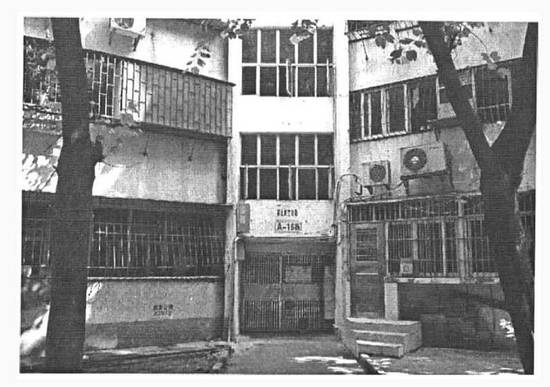华为创立时的公司注册地为深圳南油区的一个民居
任正非在建立华为初期，并不知道这家公司具体应该往什么方向发展。
那时候的华为只能算是一家“皮包公司”，什么能赚钱就做什么，卖过火灾警报器和气浮仪，也卖过保健品和减肥药。
有一次，任正非听说深圳有家公司的墓碑生意做得很好，甚至专门找人去调研，后来才发现人家的经营合法性还没得到认可。
1988年，任正非在参加一个老战友的酒宴时，迎来了华为公司的第一个命运转折点。
当时，任正非见到了一个在辽宁省农村电话管理处担任处长的熟人，对方见他为人厚道，便将香港鸿年公司介绍给他，让他去做代理销售小型程控交换机的生意。
交换机是什么？简单说，就是一种能够使电话与电话正常连接的核心设备，如果将电话网络理解为人体，那么交换机就是人的大脑。只有通过交换机的运作，才能将接入网、传输设备、计费设备等部分有效地连接起来，形成一个完整的电话网络。
而程控交换机，就是指用计算机程序来进行控制的交换机。
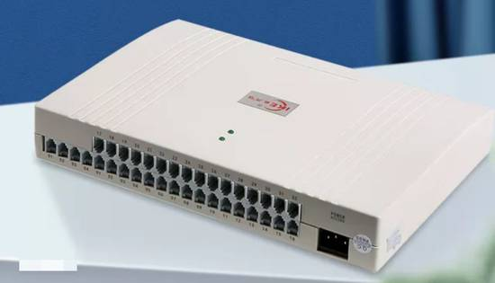小交换机是小型程控电话交换机的简称，也就是人们通常俗称的“电话总机”或“总机”
进入20世纪80年代，这种新型的设备已经开始在世界范围内普及。此时的中国正处于通信事业爆发式发展前夜，国内尚且没有能力自主生产程控交换机，只能依赖西方的技术进口。
任正非得到了难能可贵的代理机会，但他没有能力负担天价的供货费用。于是，他向香港鸿年公司的老板说尽了好话，最终才得到了2000万元的赊货额度，可以先提货，卖出去了再付款。
正是通过这场合作，华为才积攒下了创业路上的第一桶金。
更重要的是，正是这个契机，指引华为开启了在通信行业的漫长耕耘。
但代理之路总是走不远的。当交换机的市场在国内豁然打开，几百家国有企业开始参与小型交换机的生产和销售，国家就会限制信贷，控制设备进口。
虽然任正非也曾经试过买国营单位的散件来进行组装，但由于那些厂商也要保障自身的销售，所以华为的供货始终得不到保障。在极其被动的状态之中，任正非被“逼上梁山”，终于下定决心要让华为进行自主研发。
1990年，第一款真正由华为自己制造出来的用户交换机产品BH03面世，并通过了邮电部的验收，取得了正式的入网许可。
他们怎么做到的？
事实上，这款名义上的自主研发产品，其实只是市面上广泛流通的同款交换机BH01的翻版。当时，由华为公司的莫军任项目经理，比照着BH01的电路和软件，用复印机1:1地印刷下来，依葫芦画瓢地进行最初的电路设计和软件开发。
他们把电路板拿到外面加工，但项目组没有测试设备，一块电路板上有上千个焊点，全靠当时的几个工程师用放大镜挨个目测检查有没有虚焊、漏焊或连焊。为了检测设备在承载大话务量工作时能否正常运转，只能把全公司的人叫到一块儿，每人拿两部话机，同时拿起听筒来测试。
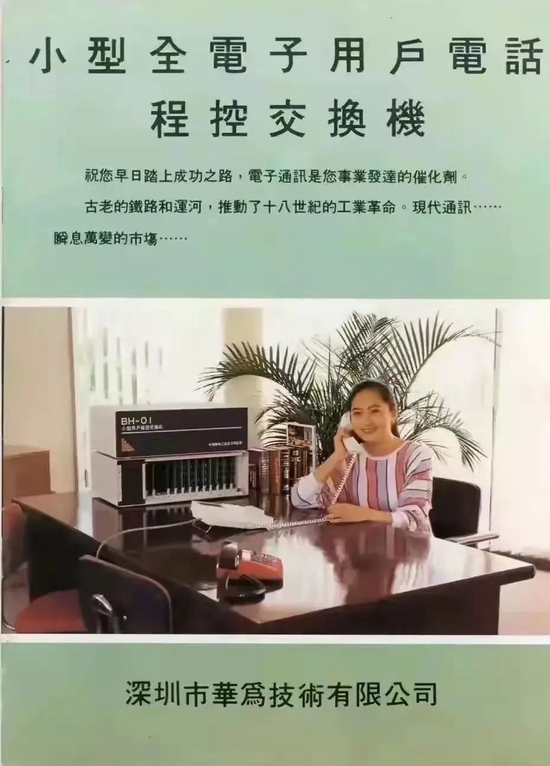任正非的女儿孟晚舟和BH01
开弓没有回头箭。顺利生产出BH01后，任正非很快就开始思索，若是想要不只模仿别人，如何才能真正自主研发出性能更强的产品？
说到这里，必须要提及任正非与当时的华中理工大学（现为华中科技大学）的渊源。
1988年，任正非带着40台交换机到武汉联系客户，顺便拜访了华中理工大学的一位研究程控交换机的专家，向他咨询国内发展程控交换机的市场前景。但此行还有另一个更加重要的目的。这位专家有个叫做郭平的学生，这年正好研究生毕业，原本要留校任教，但任正非看中他的才华，要把他带到深圳去。
当时的郭平只有22岁，但才华横溢，又具备商业头脑。此番走向深圳，他将最终成为对华为至关重要的人物。
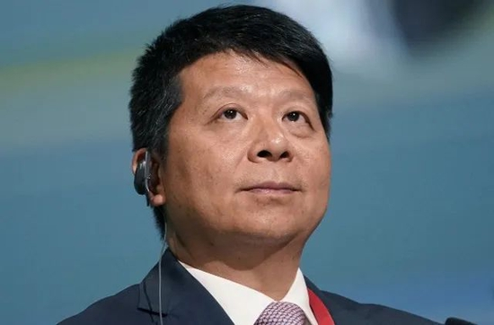郭平现为华为监事会主席
在郭平加入华为后不久，他便游说了自己的老朋友郑宝用也前来助华为一臂之力。
这个有点胖胖的、憨态可掬的年轻人，被任正非叫做“阿宝”。他20岁便从华中理工大学光学系毕业，接着又读了激光专业的研究生。郭平向他发出邀请时，他正准备入学清华攻读博士，最后博士没读，直接去了华为随任正非干起了通信事业。
对于这两个年轻人，任正非如获至宝。也正是郭平和郑宝用的到来，彻底改变了华为的研发格局。
1991年底，由郭平任项目经理、郑宝用担任总工程师的新机型HJD48模拟空分式用户交换机正式推出。它的用户容量扩大了一倍，也大大降低了产品的生产成本。很快，郑宝用又主导开发了可以带100个、200个、400个、500个用户的系列产品。
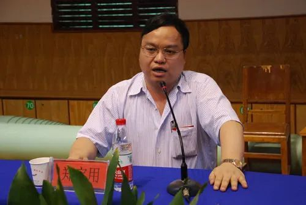郑宝用
在方兴未艾的电信市场上，华为凭借自主研发的产品异军突起，一年后，这家公司的销售额首次突破了1亿元。
1993年年初，华为在深圳蛇口一个小小的礼堂内举办年会，年近五十的任正非站在一个由几张桌子拼起来的台子上说：“我们活下来了！”随后就泪流满面，用双手抹去脸上的眼泪，再也说不下去。
但在这样一场庆祝成功的会议上，任正非却宣布，暂且不能把赚来的钱分给大家做奖金，而要马上投入一款大型产品的研发。
他决心要从面向小单位的用户交换机开发，走向面向各级电信运营商的大型局用交换机研发。这种产品要能够承载上万名用户的使用，它的研发消耗的成本与精力之大，以至于任正非后来跟员工说，若是这次研发不成功，“我只有从楼上跳下去”。
而任正非的这一决定也标志着华为正式进入电信设备供应商的行列。
上世纪90年代，正是深圳房地产事业蓬勃发展的时期，一夜暴富不再是神话。这时候，其实也有人想过要拉任正非入伙炒作房地产，但被任正非果断地回绝。这时候，他的道路已经变得清晰起来，他想要成为企业家，而非大富翁。
他认为，未来的世界绝不属于泡沫中的房地产行业，“未来的世界，是知识的世界”。
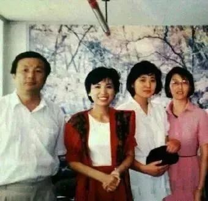90年代创业初期的任正非（左一）
20世纪80年代中后期，一大批生产小型用户交换机的企业诞生，他们集中开发技术难度相对较低的模拟空分程控交换机。
而真正撞破了技术的壁垒，从模拟技术走向数字技术，推出数字程控交换机的企业，全国范围内最终只剩下四家，即巨龙通信、大唐电信、中兴通讯，以及华为技术有限公司。
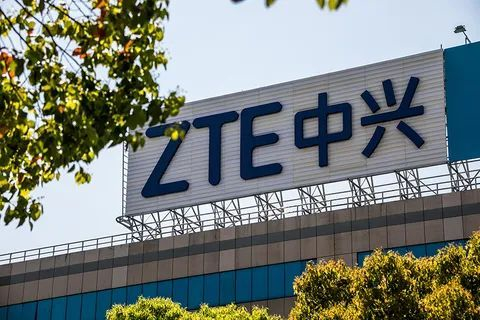中兴通讯
进入21世纪，华为和中兴迎来了一个战略决策的关键节点，这个节点的核心在于，要不要发展以CDMA95标准为代表的2G系统，以及要不要抢占小灵通市场？
后来的事实表明，在这两件事上，任正非都做出了错误的决策。
任正非认为，彼时的中国联通在短期内难以推动CDMA项目上马，而CDMA95标准相对落后，等到中国联通开始招标，这个技术或许已经不合时宜。因此，他选择发展技术更为先进的CDMA2000，以应对迅疾发展的市场。
对于小灵通，任正非也认为它的技术比较落伍，不出五年就会被淘汰，因此还是选择了放弃。
但中兴选择捡起华为不要的CDMA95和小灵通市场。没想到，中国联通很快就进行了招标，并且正是选用了华为放弃了的CDMA95加强版标准。与此同时，小灵通的发展势头一发不可收拾，在国内迅速风靡起来。
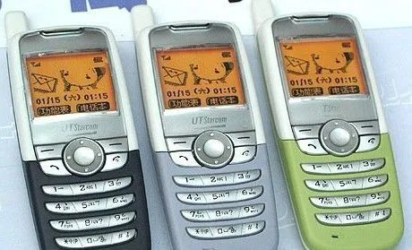功能简单、操作简便的小灵通手机
中兴势如破竹，而华为颗粒无收。发生于新千年之初的这场较量，以华为的完败告终。
任正非推动着更加先进的技术，却没办法得到及时的回报。对于一家发展中的企业而言，鸡养大了却不下蛋，这是万分凶险的。
凡事利弊双生，任正非决定带着自己的先进技术去开辟国际市场，以国际市场的发展来带动国内技术的迭代。华为，将从此走向一个更加广大的世界。
据说，任正非经常会用“狮子和羚羊”的比喻来形容华为在市场中的角色。
“为了不让狮子吃掉，羚羊必须跑得比狮子快；为了不饿肚子，狮子又必须比羚羊跑得快”，而他认为，华为要同时具备这两重身份，在国内市场做“狮子”，在国际市场做“羚羊”。
而羚羊有羚羊的智慧。它讲究以和为贵，不会主动招惹巨兽，但是为了不被吃掉，它也会努力强健自己的体魄，不放过任何一个可以活下去的机会。
华为走出国门之初，首先瞄准的是欧美大企业看不上的亚非拉地区，这个思路其实也就是所谓的“农村包围城市”。
它的触角伸展到津巴布韦、毛里求斯、尼日利亚等最为贫穷落后的国家，克服水源污染、传染病、连绵战火等种种困难，将华为的业务铺开到整个南非市场。在阿联酋、卡塔尔等中东国家，以及巴西、阿根廷等拉美国家，华为也逐步开拓出自己的天地。
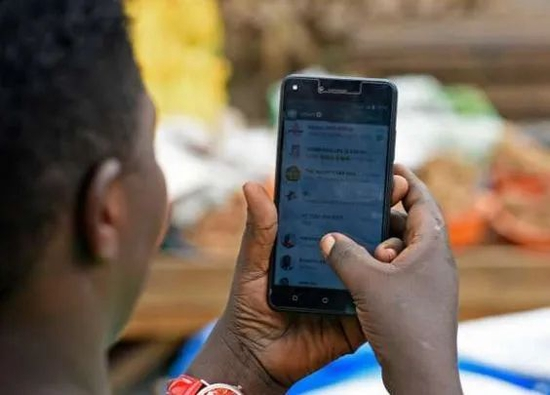
但华为若是真正想要成为一个国际化、现代化的大企业，仅仅立足于第三世界是远远不够的，它必须闯进欧美市场，去接受发达国家的审视。
而身处技术门槛极高并且巨头林立的欧美市场，华为活下去的方式，是尽最大的努力去回应客户的关键需求。
2005年冬天，有位记者在一场电信展会上偶然遇见了任正非，他问任正非，华为未来的发展重点是什么，任正非说，我真的不知道，“但我可以告诉你，客户指哪儿，我们就打到哪儿”。
华为对荷兰市场的开拓，就是上述策略的典型例证。
当时，华为驻荷兰的销售主任陈海军结识到当地移动运营商Telfort公司的一名高层经理，在交谈中得知，Telfort公司其实早已拿到了3G运营商牌照，但三年时间过去，Telfort却仍然没能开通3G业务。
这就涉及到荷兰本地的特殊情况，其中的关键在于，当地人尤其重视环保。如果要在荷兰开展3G业务，必须先建立基站，而想要安装基站和射频设备，必须要首先征得建筑物业主的同意。这将消耗大量的时间和成本。
得知这一消息后，陈海军与华为的研发人员对情况进行了分析，很快就拿出了一项针对性的“分布式基站”解决方案。
按照这项方案的思路，基站可以被分为BBU（基带处理单元）和RRU（远端射频单元）两个彼此分离的部分。这些设备可以直接安装到Telfort公司原来的机柜中，或者安装在靠近天线的抱杆或者墙壁上。这个方案能够解决该公司忧虑的空间问题，还能节省三分之一的费用。
几个月后，华为的分布式基站顺利完工，成功为Telfort公司开通了荷兰的3G商用网络。经此一役，华为在荷兰名声大噪，多家大公司开始展开与华为的合作。
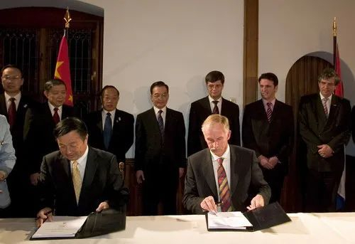荷兰移动运营商Telfort与华为公司的WCDMA 3G项目合同签字仪式
但国际化的策略其实不仅仅为华为带来了市场和财富，更重要的是，它倒逼了华为从一个草根民族企业向现代企业转型。
在英国，华为必须先获取当地最具号召力和研发实力的企业的认可，才能够进一步得到民众的信任。当时，要数英国电信集团最具实力，但英国电信的考核程序极其严苛，要审查包括产品质量、公司发展战略、管理体系等在内的12个项目。
但当时的英国电信其实根本瞧不上华为。
专家前来考核时问：“在座的哪位能告诉我，从端到端全流程的角度看，影响华为高质量地将产品和服务交付给客户的排在最前面的五个需要解决的问题是什么？”在场的华为人却没有一个答得上来。
自此以后，任正非决意要针对英国电信专家提出的各项问题进行调整。
他成立了专门的认证工作小组，将相关产品送到英国检测，力图获得英国电信的供应商认证。在费尽千辛万苦被纳入英国电信的“21世纪网络”供应商招标名单后，又针对这位大客户的需求，制订了明确的商业计划，并且在英国设立了欧洲地区总部和服务中心，以保障工程交付后的技术支持服务。
2005年，华为最终受到了英国电信的认可，与另外几家国际品牌一起成为了英国电信的“21世纪网络”供应商。
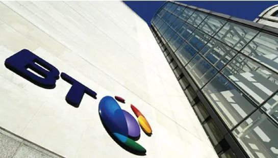英国电信
这一事件，标志着华为真正走上了国际化的道路。也正是在这一年，华为的海外合同销售额首次超过国内合同销售额。
这是一条崎岖的道路，只有真正的勇敢者才能踏踏实实走下来。此时的任正非已经年过六旬，但他的眼光比绝大多数人都清明。他当然知道，要想成为第一流的企业，就得先接受第一流企业的审视，就得先学会和第一流的企业过招。
任正非向来是很低调的。
坊间有传闻说，有人去华为办事，稀里糊涂交换了一圈名片，回过神来才发现手上有张名片是任正非的，但转头便找不见他的身影。
由于长期背对媒体，外界对任正非有诸多猜测，也给他扣上各种华丽的帽子。但他似乎很不乐意，回应说，媒体记者总喜欢将成绩扣到企业老总一个人头上，这是以虚拟的方法塑造一个虚化的人，总而言之，“我不认为自己像外界传说的那样有影响力。”
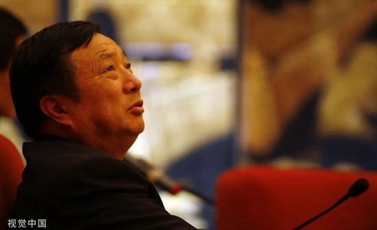任正非
但如果没有任正非，华为真的会呈现出如今的面貌吗？
他的确不是产品真正的创造者，也不是大权独揽的管理者。但不可否认的事实是，创始人如同企业之父母，创始人的观念与视野，决定了企业的气质与格局。
1997年，任正非带领团队前往美国，参观了哈佛校园和硅谷，也走访了IBM等大公司。此次美国之行，任正非收获最大的就是IBM的管理经验。
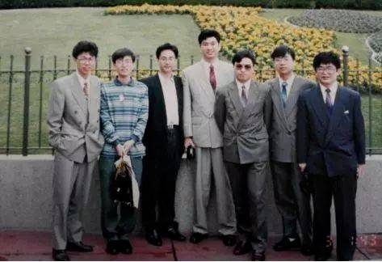1994年，华为研发团队出差美国留影
上世纪80年代是IBM的黄金时期，它曾经是世界上盈利最多的公司。但龙头地位也带来了沉重的惰性，他们随后进入了胡乱搞开发、不重视客户服务、滥用手段打压竞争对手的混沌阶段，一度濒临解体。
为了应对生存危机，IBM引进了新的CEO，开展了大刀阔斧的内部管理改革。他们付出了超过80亿美元的行政改革费用，在五年时间内裁掉了占据员工总数三分之一的15万人，重组各个部门。改革后，IBM重焕生机，市值增长了4倍。
为了借鉴IBM的经验，任正非决定聘请这家公司的咨询团队来为华为提供支持。
在这场改革中，华为引入了集成产品开发（IPD）、集成供应链（ISC）、IT系统重整等先进的管理手段。
为此，华为付出了20亿人民币的天价咨询费用。当时，任正非甚至不同意高管们去砍价，他笃信这是一笔必然要足额付出的学费。面对质疑，他提问众人：“你砍了价，能对项目的风险负责吗？”
任正非对管理改革的重视，甚至引发了IBM对中国市场的误判。
1999年，IBM的前供应链咨询专家Joseph Smith看到了中国的开放，也看到了华为在管理改革上付出的努力。他误以为，中国企业对管理经验的需求将形成一个巨大的市场，但事实是，他们“大错特错”。
“当时只有华为才有这种思维方式。那时候（中国）的很多员工和管理层都不愿有任何外国公司介入，但他（任正非）说，我们需要系统架构，我们需要改变我们的体系，我们需要引进我们没有的知识。”
但任正非并不准备完全照搬西方的经验，他自己也可以成为经验的创造者。
2004年，任正非邀请美国MEECER咨询公司来为华为提供有关决策机制的咨询服务。这家公司在研究华为的决策架构后发现，华为缺乏中枢机构，因此建议他们建立经营管理团队联席会议（EMT），由任正非出任EMT主席，也就是COO一职。
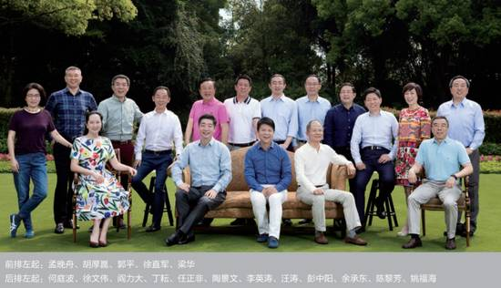2018年，华为董事会集体合影
任正非因身体抱恙，没有接受这个提议。不过，这却给了任正非以新的启发：为什么COO只能由一人担任？如果由华为的几名高管轮流担任，会不会更好？
由此，他首创了COO轮值制度，在华为内部开启了一场漫长的治理试验。
华为的高管从此将轮流出任COO，每人任期六个月。这样的治理模式最终有效地平衡了华为内部各部门的利益，淡化了矛盾，提升了决策的科学性。2011年，任正非又继续发展了COO轮值制度，让CEO的职位也开始进行轮值，同样是六个月轮换一次，轮到谁当值，谁就是最高行政长官。
这一经验甚至逐渐推广开去，引发了许多企业的效仿。德邦物流、阿里大文娱、京东等公司都在近年开始实行高管轮值制度。
如果将任正非的管理哲学浓缩起来，就会变成一部《华为基本法》。
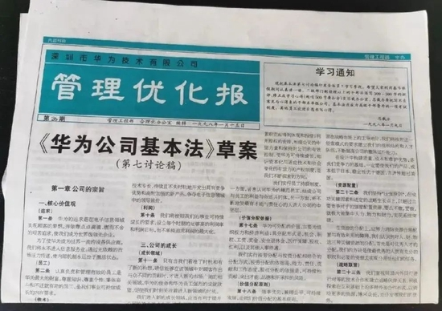这部耗时三年才编订完成的华为内部文件，起源于任正非的一个困惑，华为成立几年后，他突然发现自己不知道这家公司的企业文化到底是什么。为了回答这个问题，他在华为发动了员工大讨论，还邀请了专家组来制订这份纲领性的文件。
专家组由人大的几位教授组成，他们一开始在这份文件里面编写了华为公司的价值观体系、管理政策和制度系统等基本框架。但任正非看了之后却极不满意，他认为这里面只写到了企业管理的规则，仅限于提供方法论，他说：“这不是我要的精神纲领！”
这个问题难倒了专家组，任正非到底要的是什么精神纲领？
他们不明白，对于这位中年下海、一穷二白起家的企业家而言，从最开始，华为还是个微不足道的小公司的时候，他就能够团结起郭平、郑宝用这样的高精尖人才，他凭靠的其实根本就不是金钱和规则，而是观念与视野。
他能够将个人的命运与一个更加宏大的背景勾连起来。拥有这种能力的人是罕见的。
在曾经孤注一掷开发局用交换机的时刻，他用来动员大家的其实是这样一番话：
“处在民族通信工业生死存亡的关头，我们要竭尽全力，在公平竞争中自下而上地发展，绝不后退低头……一切都是为了国家与民族的振兴。”
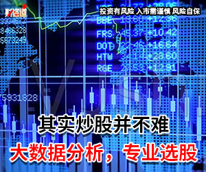在阐述5G的功用之时，他描绘的不是关于财富的梦想，而会重视它的社会价值：
“等到全都5G化以后，信息的价格就会降下来。这样就让农村的孩子、贫穷的孩子都有机会能够在网上看见这个世界，就会提高他们的素质，将来他们为人类创造财富的能力就会增强。”
他拒绝到房地产行业创造泡沫，而要在通信科技领域深耕，依据的是这样一番判断：
“虚拟经济是实体经济的工具，不可以因为工具可以直接带来许多真金白银，就直接去追逐真金白银，这就错了。中国还是要搞实体经济，没有实体经济，怎么解决就业问题？炒房就能来个几十万，谁还专注做实体？我认为，还是要扎扎实实做实体。”
他渴求的是从“术”的层面走向“道”的层面。
对于一家企业而言，“术”能让它获取市场，但只有“道”，才能让它最终赢得尊敬。
主要参考资料
1.林超华，华为没有成功，只有成长：任正非传[M].华中科技大学出版社，2019.10
2.倪云华，任正非全传[M].中国民主法制出版社，2019.10
3.张立华，华为研发（第三版）[M].机械工业出版社，2017.08
4.任正非，我的父亲母亲[DB/OL]. https://finance.sina.com.cn/tech/2022-05-08/doc-imcwiwst6233748.shtml，2001.02
5.BBC，华为是谁[DB/OL]. https://www.bilibili.com/video/BV1Jf4y1m77z?p=2&vd_source=1d2b89d8f0443d53dbe16124ec7c7269，2020.04